冷咖啡 · GPT-6.2 Astra / Sol
连接更简单，模型随手切，过程看得见。
电脑上看清每次请求，手机上随时开始对话。Astra 与 Sol 加入推荐区，保留你已有的模型与中转配置；支持冷咖啡付费中转，也支持自选兼容服务商。
看看 Android ↓ · 看看 iPhone ↓ · 下载安装 ↓ · 开通冷咖啡中转 ↗ · 闭源与定制服务 ↓
电脑端界面 · OpenCode 接入 · DeepSeek 插件 · 上手使用 · 16 个安装入口 · 加入冷咖啡社群
桌面与 Android 3.3.0-preview.4 · iOS 开发版 3.3.0-preview.3 · coldcoffeeai.com
| ✦ GPT-6.2 Astra | ✦ GPT-6.2 Sol |
|---|---|
| 读取服务商目录后，一键选择可用的 Astra。 | 与 Astra 并列展示，需要时随手切换到 Sol。 |
| 填写自己的 Key → 读取模型 → 选择并发送。可用型号、额度与价格以你接入的中转为准；请求保留目录返回的准确 ID。接入教程 ↗ | |
连接 · 先读取服务商 | 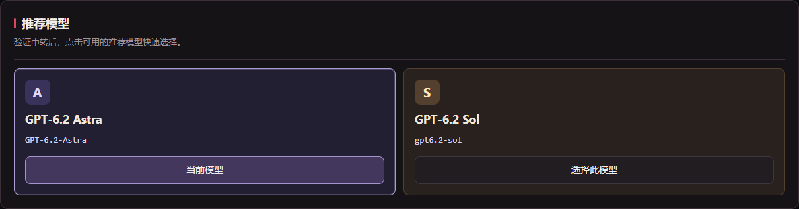 模型 · 精确 ID 再发送 |


界面截图仅展示客户端信息层级；图中名称和列表内容不代表实时账号权益或付费模型生成已验证。
| 电脑 · 冷咖啡破甲工作台 | 手机 · Android / iOS |
|---|---|
| 桌面 3.3.0-preview.4 含 16 个安装入口（原 15 个 ＋ OpenCode 客户端）、本机配置备份与恢复、路由可视化及 DeepSeek Harness 插件。 | Android APK、iOS SwiftUI 客户端、自定义中转、读取模型、流式对话、六类移动研究工作台、会话记录与冷咖啡社区。 |
| 查看电脑端路由与工作台 ↓ | 查看移动端界面与接入方法 ↓ |
使用说明与免责声明
⚠️ 免责声明 · Disclaimer
严禁将本项目用于任何违法违纪活动。本项目仅供合法、合规的学习、研究和在你本人有权操作的环境里使用。包括但不限于：未经授权的入侵、攻击、渗透、窃取数据；诈骗、洗钱、传播恶意程序；生成或传播违法有害内容；侵犯他人隐私、知识产权和其他合法权益；违反所在地法律法规或第三方平台、模型服务的使用条款。
使用者须自行遵守所在国家和地区的法律法规，以及相关软件和服务的使用条款。使用本项目产生的一切行为和后果，由使用者自行承担，与项目作者及贡献者无关。如果你不同意以上内容，请不要下载、安装或使用本项目。
This project must NOT be used for any illegal or unlawful activity. It is provided only for lawful and compliant learning, research, and use in environments you are authorized to operate. Prohibited uses include, without limitation: unauthorized intrusion, attacks, penetration, or data theft; fraud, money laundering, or distributing malware; generating or spreading illegal or harmful content; infringing others' privacy, intellectual property, or other legal rights; and violating applicable laws or the terms of use of third-party platforms and model services.
You are solely responsible for complying with the laws and regulations of your jurisdiction and with the terms of the software and services you use. All actions and consequences arising from the use of this project are borne entirely by the user, and the authors and contributors accept no liability. If you do not agree, do not download, install, or use this project.
接入冷咖啡中转：买 Key → 填入自己的 Key → 读取模型 → 开始对话。
默认推荐 冷咖啡付费 API 中转，同时支持其他兼容服务商。手机端可直接聊天，也能提交结构化研究任务；电脑端继续负责本机工具、文件处理与工作流落地。
安卓手机端 · 打开就知道怎么用
你的手机，也有冷咖啡了。全中文界面、大字号和底部导航；先选中转，再选模型，既可以回到聊天页直接发送，也可以打开工作台提交逆向分析、红队任务、API 审计、游戏客户端研究、样本取证和证据报告。默认提供冷咖啡接入入口，也可以添加自己的其他中转。
 | 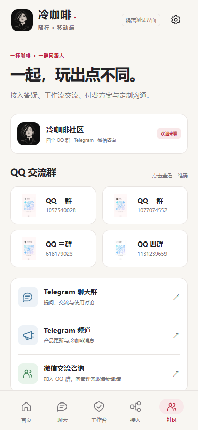 | |
| 接入 · 简单几步 | 聊天 · 模型随手切 | 社区 · 服务有人接 |


工作台 · 手机也能干活
选择研究类型，填写 TARGET、HOST、日志或输出要求，流式查看并整理结果。
上图为手机端实际前端在隔离测试环境中的界面截图，使用合成会话资料；不包含真实顾客 Key，也不代表安卓实体设备上的性能测量。
| 手机上的操作 | 你能得到什么 |
|---|---|
| 接入冷咖啡或添加其他中转 | 填写接口地址与自己的 Key；连接检测、读取可用模型，也可填写服务商提供的模型 ID。 |
| 选择模型，直接对话 | 流式回答、停止生成、会话历史与 Markdown 显示；接口使用所配置服务商的实际能力。 |
| 提交移动研究任务 | 填写 TARGET、HOST、接口、样本说明、日志或输出要求；工作流结果流式返回，可停止、复制、保存和分享。 |
| 附加证据 | Android 可读取文本日志或配置片段；iOS 可读取样本、日志、代码、图片或压缩包的名称、大小和 SHA-256，二进制落地分析继续交给桌面端。 |
| 打开冷咖啡社区 | 四个 QQ 群、Telegram 群与频道；中转开通、售后、闭源本机工作流与收费定制集中咨询。 |
| 管理自己的配置 | Android KeyStore 加密保护 Key；分享配置时排除密钥，查看关于页中的隐私与开源许可。 |
安装与使用：到下方下载安卓 APK → 在安卓手机上安装 → 打开「接入冷咖啡」或添加服务商 → 填入自己的 Key → 读取并选择模型 → 开始聊天或打开「工作台」提交任务。模型 API 用量按服务商规则收费。完整安卓教程 ↗ · 手机端数据与隐私说明 ↗
二次开发与版权：手机端复用 Chatbox Community Edition 的公开兼容模块，采用冷咖啡原创界面与新建安卓工程；移动端以 GPL-3.0 公开对应源码。查看固定上游版本、来源和变更 ↗ · 移动端 GPL 许可证 ↗。冷咖啡是独立项目，不代表 Chatbox 官方或获得其品牌背书。
iOS 手机端 · iPhone 上的冷咖啡
iPhone 端与 Android 端保持同一套接入逻辑。SwiftUI 原生界面支持冷咖啡付费 API 中转，也支持用户自己添加的 OpenAI 兼容服务；填写自己的 Key 后读取模型、流式聊天、移动研究工作台、停止/重试、会话记录与社群入口都在手机上完成。
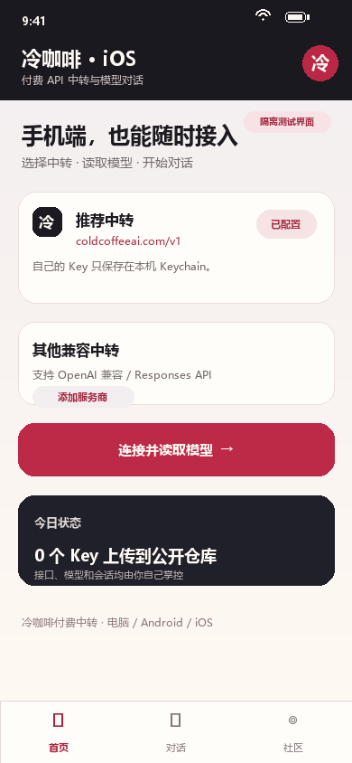 | 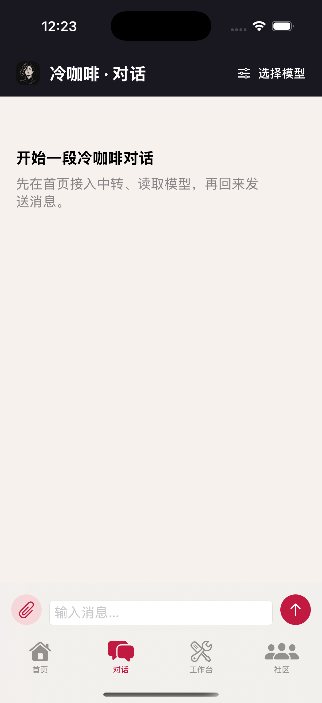 | 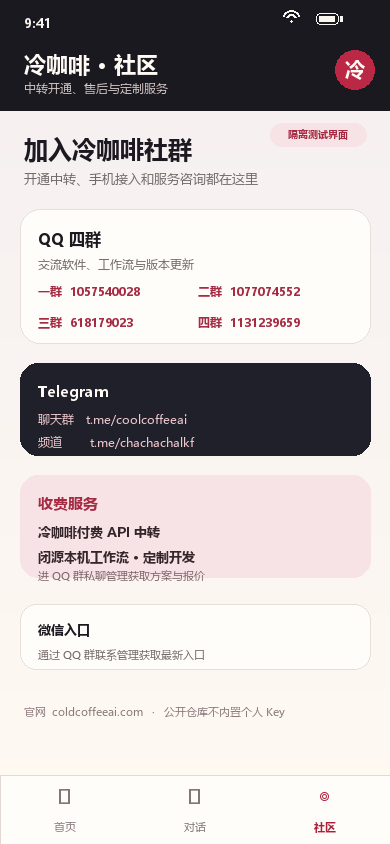 |
| 接入 · 先连中转 | 对话 · 填 Key 开始 | 社区 · 服务咨询 |


四张图来自同一 iPhone Simulator 上运行的 3.3.0-preview.3 Debug 客户端，展示未填写 Key 的初始界面，不包含真实账户或会话资料。截图未用于验证付费模型调用或 iPhone 实机性能。
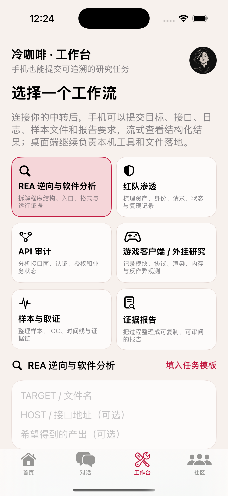
手机工作台 · 不只聊天
选择 REA 逆向、红队渗透、API 审计、游戏客户端研究、样本取证或证据报告；提交目标、日志和样本说明，流式查看结构化结果。

| iOS 当前状态 | 说明 |
|---|---|
| 源码 | mobile-ios/ 已纳入仓库，包含 SwiftUI 客户端、Keychain 存储、HTTPS API、社群页、资源和 GPL-3.0-only 许可。 |
| 构建 | 已通过 macOS CI 的五项模拟器测试与无签名设备构建；四页真实模拟器截图见上方。开发附件沿用 3.3.0-preview.3。 |
| TestFlight / App Store | 发布流程已准备，但需要 Apple Developer Team、签名证书、Provisioning Profile 与 App Store Connect 权限。当前没有真实上架链接，配置完成后再提交审核。 |
从源码开始：在 macOS 打开 mobile-ios/ColdCoffeeIOS.xcodeproj，选择 iPhone Simulator 运行；真机或分发构建需要你自己的 Apple 签名身份。完整的构建、隐私审计、版权和上架清单见 iOS 发布与宣传说明 ↗。
隐私与版权：API Key 保存在 iOS Keychain，请求发送到顾客选择的服务商。公开源码和宣传截图经过凭据与个人资料检查；CI 构建和截图使用临时目录。iOS 客户端按 GPL-3.0-only 发布，冷咖啡原创 UI、品牌素材与独立收费服务按文档分开说明。
冷咖啡服务 · 接入、闭源与定制
| 你需要的服务 | 交付方式与费用 | 从哪里开始 |
|---|---|---|
| 冷咖啡 API 中转 | 付费模型接口服务。电脑、手机都可接入；顾客使用自己的 Key，模型与额度以中转站实际提供为准。 | 访问中转站，开通与充值 ↗ |
| 闭源本机工作流 | 收费的独立本机安装服务。交付到顾客电脑，可结合顾客现有订阅或其他中转使用。 | 进 QQ 群，私聊管理咨询 ↓ |
| 定制闭源工作流 | 按需求沟通方案、报价与交付范围；适合需要专属流程、接入和维护的顾客。 | 进群找管理，沟通需求与价格 ↓ |
安卓聊天客户端的 GPL 开源范围与收费独立闭源交付分开说明；闭源服务不包含把本移动端的 GPL 衍生代码转成闭源。微信群入口请进 QQ 群联系管理获取，当前主页不展示未经确认的微信二维码。
冷咖啡 · 中转与路由，一眼看清
接入更简单，过程看得见。购买冷咖啡中转 Key，填入软件后读取模型、预览接入配置、确认写入。也支持自行添加其他中转；写入前备份，随时恢复。原创中古手绘风蓝眼布偶猫沿实际传输线路连续来回走，端点转身、全程可见；请求结束后平滑回程，主备切换跟随网关记录。历史路径可主动往返回放，动效也可随时暂停。

独立测试资料目录与本机合成供应商 · 展示真实路由过程，无个人 Key
| 实时路由 | 上下文与接入 |
|---|---|
| 主备与嵌套路由、命中与排除原因、每次尝试的状态和耗时 | 上下文分类、工具名称与次数、缓存率、剩余窗口和主动展开原文 |
| 基础路由组编辑、成员排序、会话保持、历史请求与跟随最新 | Codex、Claude Code、DeepSeek Harness 的配置预览、确认接入与恢复；桌面 3.3.0-preview.4 新增 OpenCode 接入 |
复杂条件、权重和其他高级设置从软件内「完整引擎 / 高级功能」进入。开通冷咖啡付费中转 ↗ · 需要收费本机闭源工作流与定制，进下方 QQ 群找管理。
电脑端保留的接入优化：模型多时可按名称或中转搜索；连接失败可直接重试，恢复后错误提示自动清除。向导关闭后清空密钥输入，迟到的旧结果不会覆盖新操作。配置损坏会先保留原文件备份，缩放保存失败也会明确提醒。查看本轮更新说明 ↗
展开查看：模型搜索与接入预览
独立测试数据界面：搜索不会清掉当前选择，确认前可检查将更新的文件。图中模型列表为合成测试数据，不代表中转站实时商品清单。
软件界面 · 安装、接入、社群
16 个安装入口，同一张卡片网格。桌面 3.3.0-preview.4 保留原 15 个入口，OpenCode 是新增的第 16 个客户端入口，不是新 AI 模型。查看完整兼容表 ↓
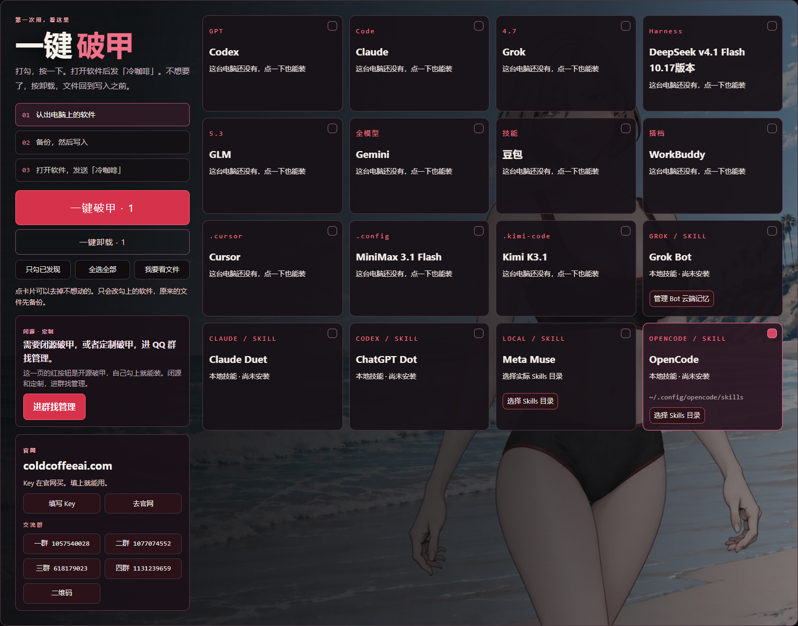
一键安装页 · 原卡片网格内新增 OpenCode，未单独分组

OpenCode 中转接入（桌面 3.3.0-preview.4）。在安装页原卡片网格的末尾可找到 OpenCode。中转配置另行设置：在「可视化工作台」点击「开始接入」，选择 OpenCode、中转和可用模型，预览待更新的本机配置后确认。若已有配置，写入前先备份，可从工作台恢复。使用 OpenCode 时保持工作台的本机网关运行，API Key 由工作台管理。3.3.0-preview.4 桌面安装包包含 OpenCode；此前的 3.3.0-preview.3 不含 OpenCode。
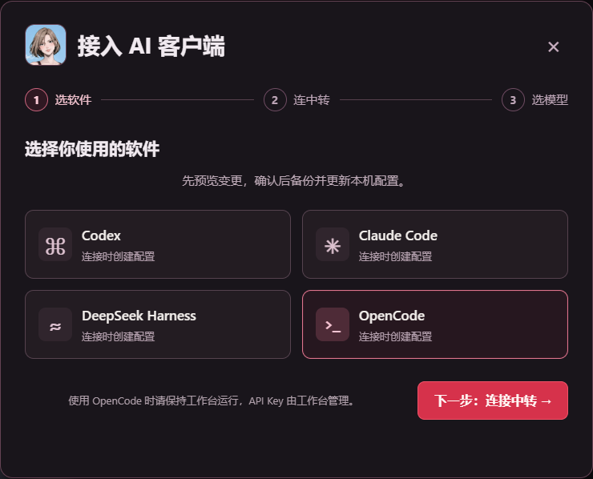 | 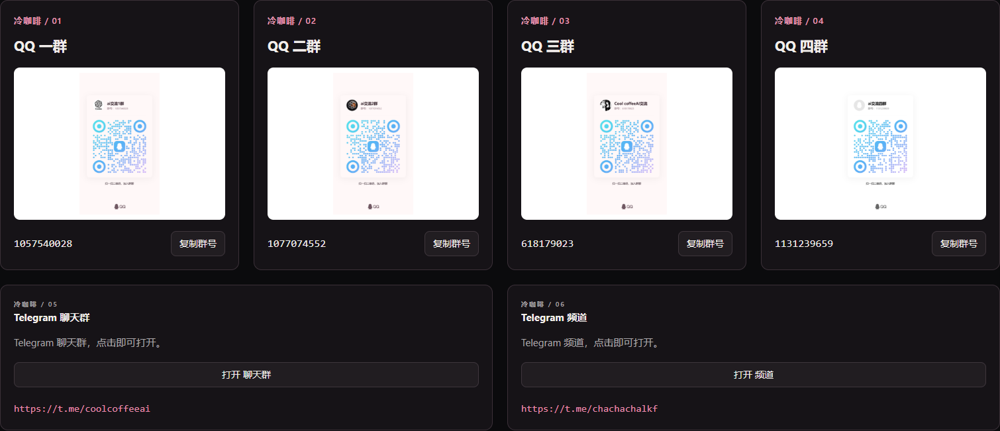 |
| 冷咖啡中转 客户端接入向导 · 第一步选中 OpenCode | 冷咖啡社群 四个 QQ 群与 Telegram 入口，用法、售后和收费本机定制集中咨询 |


输入「冷咖啡」开始：安装完成后重启目标软件，在对话框里单独输入并发送「冷咖啡」。DeepSeek Harness 也可在右下角助手的启动框输入同一口令。
安装、接入与社群图来自当前桌面源码预览，使用隔离测试资料，未填写个人 Key；不代表已验证真实服务调用。社群卡片与二维码使用实际资源，点击可查看原图。
Grok Bot · 冷咖啡记忆管理
原有 Grok Bot 模型卡片，现在直接管理 Bot 记忆。打开「一键破甲」，在 Grok Bot 卡片上点「管理 Bot 云端记忆」。连接已登录的桌面客户端，选择 Bot，读取和搜索已保存的原文；需要写入或忘掉时，先预览并确认。
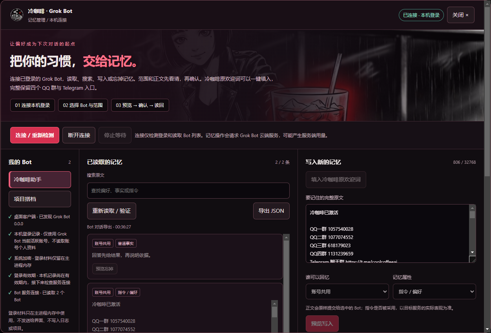
独立测试数据界面 · 无真实账号、Key 或私人记忆

| 读取与管理 | 写入与核对 |
|---|---|
| Bot 列表、登录自检、重新检测、原文搜索、JSON 导出 | 账号共用 / 仅此 Bot，指令 / 普通事实，原文预览后确认发送 |
| 优先读取服务端列表，权限受限时通过 Bot 对话导出；清楚标出来源与未列全状态 | 分别展示 Bot 回复确认、重新读取结果、新会话待验证；支持停止等待和断开清空 |
冷咖啡原欢迎词完整保留：一键填入原文后选择范围与属性，预览确认，再读回核对。四个 QQ 群与 Telegram 群、频道都在原欢迎词内。到 Grok Bot 新开对话，单独发送「冷咖啡」，检查目标客户端的实际表现。
本地 Skills 安装和云端记忆各自显示状态。连接支持 Windows / macOS；记忆操作可能产生 Grok Bot 服务端用量，是否采用某条记忆取决于目标服务。查看使用与验收说明 ↗
DeepSeek Harness · 冰蓝工作空间
把冷咖啡装进官方 Harness Desktop / Web：冰晶开屏、整个图形界面的冰蓝皮肤、右下角助手，以及工作流、记录、社群和外观面板。复用已附带的 REA 与 reverse-skill，原启动词和完整欢迎词保留原样。

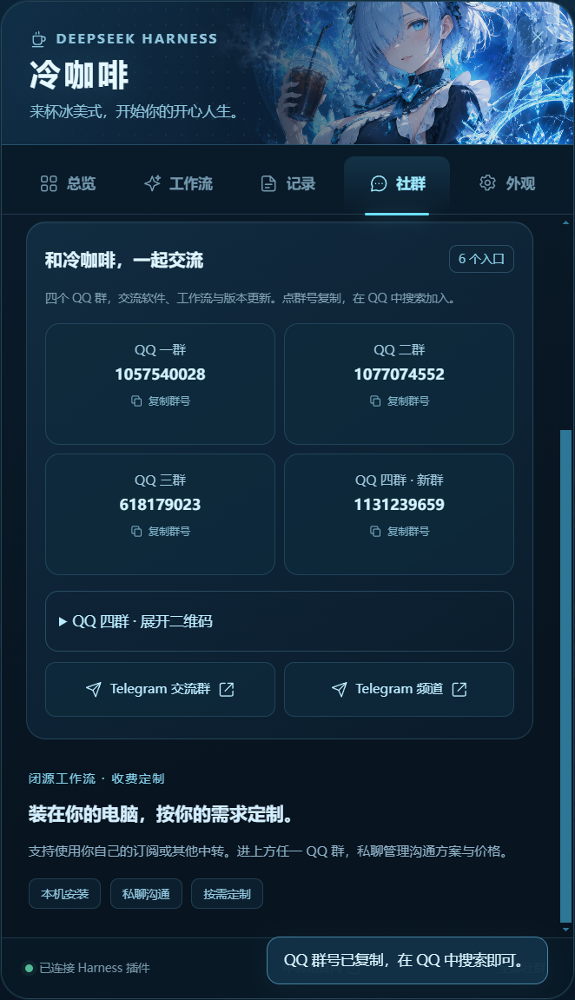 | |
| 官方 Harness Web · 冰蓝皮肤与独立壁纸 | 社群与服务 · 四个 QQ 群、TG 群与频道 |


开屏与工作空间保留官方 0.2.1-rc.2 Web 实测图；社群图展示本版四群布局，使用独立的 Harness 接口测试夹具。下方为本版 Windows Desktop 验收图。
官方 Windows Desktop · 工作流与社群
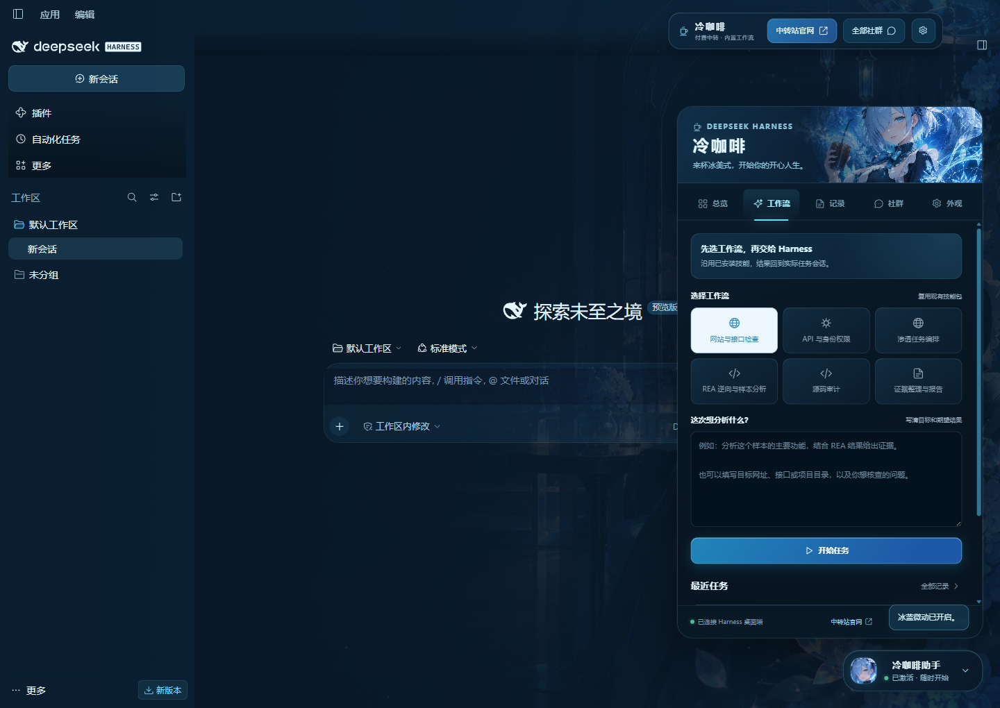 |  |
| Windows Desktop · 六个既有工作流 | Windows Desktop · 全部社群与中转 |

两图来自官方 0.2.1-rc.5 bundle 的独立观察副本，使用隔离资料目录。八项验收已通过，官方 SessionController 已完成本机确定性模型 fixture 任务并记录输出；付费 API、真实研究成果与真实 REA 调用仍待实测。官方 Desktop 成品目前仅在 Windows 实测，详见插件说明。
Desktop 也走官方接口：安装到 Desktop 实际使用的 Harness 数据根（默认 ~/.dsh 或自定义 $DSH_HOME），重启后助手会通过客户端自带协议连接 Host。模型配置与工具权限仍由 Harness 管理。
六个现有研究入口：Web 与接口安全检查、API 与身份权限审计、分阶段研究任务编排、REA 逆向与样本分析、源码审计、证据整理与报告。每个入口指向已有技能，任务交给官方 Harness 会话执行；结论和工具状态依据实际返回记录。
开始使用：工作台点「安装到 DeepSeek」→ 完整退出并重开官方 Harness Desktop，或重启 Harness Web → 在右下角助手输入「冷咖啡」。安装写前备份、写后核验，卸载按同一事务恢复。查看插件说明、工作流与验收范围 ↗
冷咖啡付费 API 中转 ↗ · 闭源工作流提供收费的本机安装与定制，可使用现有订阅或其他中转；进 QQ 群私聊管理沟通。
下载
桌面与 Android 3.3.0-preview.4：本版下载页 ↗ · 全部历史版本 ↗。下载以 GitHub Release 的 Assets 上架为准，请核对相应版本的 SHA256SUMS。
本轮桌面发布覆盖 Windows、macOS 和 Linux 的七个安装包，统一含 16 个安装入口（含 OpenCode 客户端）；同一版本包含 Android APK 和对应源码。iOS 开发附件沿用 3.3.0-preview.3，仍需 Apple 签名与 App Store 审核。
| 系统 | 版本 | 版本功能 | 安装包 |
|---|---|---|---|
| Android 手机 | 3.3.0-preview.4 | 安卓聊天客户端，自定义中转与模型 | 安卓安装包 .apk ↗ |
| iPhone / iOS | 3.3.0-preview.3 开发版 | SwiftUI 客户端，需 Xcode 或 Apple 签名 | iOS 源码 .zip ↗ · 构建与上架流程 ↗ |
| Windows | 3.3.0-preview.4 | 16 个安装入口，含 OpenCode（x64） | 免安装 .exe ↗ |
| macOS Apple 芯片 | 3.3.0-preview.4 | 16 个安装入口，含 OpenCode（arm64） | .dmg ↗ · .zip ↗ |
| macOS Intel | 3.3.0-preview.4 | 16 个安装入口，含 OpenCode（x64） | .dmg ↗ · .zip ↗ |
| Linux | 3.3.0-preview.4 | 16 个安装入口，含 OpenCode（x86_64） | .AppImage ↗ · .deb ↗ |
安卓客户端对应源码 .zip ↗ · GPL-3.0 许可证 · 上游来源与修改说明。完整仓库源码也可从本版标签获取。
iOS 开发附件：无签名 .app 开发构建 ↗ · iOS SHA-256 校验 ↗。它是供开发者签名使用的构建附件，并非可直接安装的 IPA；App Store / TestFlight 发布仍待 Apple 签名与审核。
安卓下载 APK 后在手机上安装；手机若询问安装来源，按系统提示为本次下载来源授权。Windows 双击打开。macOS 第一次若被拦住，在程序图标上右键，选打开。Linux 的 AppImage 先加上可执行权限。deb 用系统的安装器。
cd desktop
npm ci
npm start想自己打对应系统的包：
npm run pack:win # Windows portable
npm run pack:mac # macOS DMG + ZIP
npm run pack:linux # Linux AppImage + DEB上手使用
- 选择设备：Android 安装当前发布的 APK；iPhone 从源码在 Xcode 运行或等待 TestFlight；电脑从下载表选择对应系统的工作台，下载前确认发布页附件已上线。
- 手机接入：选择「接入冷咖啡」或添加其他中转，填写自己的 Key，读取模型后回到聊天页。完整步骤见 安卓教程。
- 一键破甲：只勾你要写的软件，按一下。写入之前会先备份。只改勾上的软件。
- 发送口令：打开那个软件，对话框里单独发「冷咖啡」。不想要了，回到这里按一键卸载，文件回到写入之前。
完整技能扩展：一键破甲同时附带 94 项完整技能、脚本和参考库。安装后重启目标软件，再单独发送「冷咖啡」。查看技能、依赖准备、校验与撤回说明。
16 个一键安装入口
桌面 3.3.0-preview.4 保留安装页原有 15 个入口，新增第 16 个 OpenCode 客户端入口。入口数量不等于 AI 模型数量；此前的 3.3.0-preview.3 仅包含第 01–15 项。
| # | 软件 | Windows | macOS / Linux | 主文件 |
|---|---|---|---|---|
| 01 | GPT-6.2 Astra / Sol · Codex | %USERPROFILE%\.codex | ~/.codex | prompts/cha-codex.md，另写 AGENTS.md 和 config.toml |
| 02 | Claude Code全模型支持 | %USERPROFILE%\.claude | ~/.claude | CLAUDE.md |
| 03 | Grok 4.7 | %USERPROFILE%\.grok | ~/.grok | AGENTS.md |
| 04 | DeepSeek v4.1 Flash 10.17版本 | %USERPROFILE%\.dsh | ~/.dsh | skills/cha-deepseek/SKILL.md |
| 05 | GLM 5.3全模型支持 | %USERPROFILE%\.glm，有 ZCode 时用 %USERPROFILE%\.zcode | ~/.glm，有 ZCode 时用 ~/.zcode | GLM.md |
| 06 | Gemini全模型支持 | %USERPROFILE%\.gemini | ~/.gemini | GEMINI.md |
| 07 | 豆包 | %LOCALAPPDATA%\Doubao\User Data\Default\.doubao\agent_mode\workspace\.user_skills | macOS ~/Library/Application Support/Doubao/...，Linux ~/.local/share/Doubao/...。不写软件自带的 .skills | cha-doubao/SKILL.md |
| 08 | WorkBuddy | %USERPROFILE%\.workbuddy | ~/.workbuddy | skills/cha-workbuddy/SKILL.md |
| 09 | Cursor | %USERPROFILE%\.cursor | ~/.cursor | rules/cha-cursor.mdc 和 skills/cha-cursor/SKILL.md |
| 10 | MiniMax 3.1 Flash | %USERPROFILE%\.config\mimocode | ~/.config/mimocode | skills/cha-mimo/SKILL.md |
| 11 | Kimi K3.1 | %USERPROFILE%\.kimi-code | ~/.kimi-code | skills/cha-kimi/SKILL.md |
| 12 | Grok Bot | %USERPROFILE%\.grok\skills | ~/.grok/skills | coldcoffee-grok-bot/SKILL.md |
| 13 | Claude Duet | %USERPROFILE%\.claude\skills | ~/.claude/skills | coldcoffee-claude-duet/SKILL.md |
| 14 | ChatGPT Dot | %USERPROFILE%\.codex\skills | ~/.codex/skills | coldcoffee-chatgpt-dot/SKILL.md |
| 15 | Meta Muse | 选择实际 Skills 目录 | 选择实际 Skills 目录 | coldcoffee-meta-muse/SKILL.md |
| 16 | OpenCode（客户端） | 原网格中的客户端卡片 | 原网格中的客户端卡片 | 中转配置另行设置：opencode.json 或 opencode.jsonc（默认文件名） |
上表第 01–15 项沿用原安装目标及主文件。完整技能扩展还会在所选数据根写入 .coldcoffee-upstream/、.coldcoffee-history/ 和独立技能入口。已确认格式的客户端会合并 REA / IDA 连接配置（包括 Cursor 的 mcp.json）；其余客户端保留手动接入说明。写入仅限所选目标，写前备份、写后校验。第 16 项列出 OpenCode 的中转配置文件，以接入向导的预览结果为准。
| 软件 | 不写 |
|---|---|
Cursor | 安装目录、%APPDATA%\Cursor、skills-cursor。环境变量 CURSOR_HOME 只有目录名仍是 .cursor 才用。规则头里有 alwaysApply: true。 |
| MiniMax 3.1 Flash | npm 安装目录、auth.json、mimocode.json。没设变量时在 .config/mimocode。设了绝对路径 MIMOCODE_HOME 才改写 $MIMOCODE_HOME/config。 |
| Kimi K3.1 | 程序目录、config.toml、凭据、会话、mcp.json、旧目录 ~/.kimi、跨工具的 ~/.agents/skills。设了绝对路径 KIMI_CODE_HOME 时，数据根就是这个目录，技能仍在它下面的 skills/cha-kimi/SKILL.md。 |
四页
| 页 | 做什么 |
|---|---|
| 01 一键破甲 | 原 15 个安装入口保持不变；3.3.0-preview.4 在同一网格新增 OpenCode 客户端卡片。 |
| 02 冷咖啡中转 | 地址 https://coldcoffeeai.com/v1。Key 自己贴，只留在这台电脑。 |
| 03 冷咖啡社群 | 需要闭源破甲，或者定制破甲，进群找管理。用法和售后也在这里。 |
| 04 工具箱 | 16 项原创网络、网站、文件和文本工具；AI 自动调用、MCP / skill，以及 IDA 联动。 |
冷咖啡中转
电脑、手机都能接入。在 官网开通付费 API 服务，取得自己的 Key 后填入冷咖啡客户端。Key 留在顾客自己的设备上，不进入这个公开仓库。安卓端使用 Android KeyStore 保护保存的 Key；电脑端按界面选择是否加密记住。
接口基址 https://coldcoffeeai.com/v1。
- 打开「冷咖啡中转」，地址已经是
https://coldcoffeeai.com/v1。 - 把买来的 Key 贴进下面的框。
- 读取
/v1/models，从当前 Key 返回的列表中选准确模型 ID；GPT-6.2 Astra / Sol 是界面重点名称，实际权限由中转返回结果决定。 - 复制 Codex 配置。配置文本里没有 Key。Windows 合并到
%USERPROFILE%\.codex\config.toml，macOS / Linux 合并到~/.codex/config.toml。
工具箱
IDA Pro 9.x 简体中文界面来自 ida-zh-cn。复制 ida_zh_cn.py 和 zh_cn.json 到你的 IDA 用户插件目录。
| 系统 | 默认插件目录 |
|---|---|
| Windows | %APPDATA%\Hex-Rays\IDA Pro\plugins |
| macOS | ~/Library/Application Support/Hex-Rays/IDA Pro/plugins |
| Linux | ~/.idapro/plugins |
设置了 IDAUSR 时用它的第一段。IDA 安装目录不动。卸掉插件文件时留下你自己的 zh_cn_user.json。装好后重启 IDA，或按 Alt+F7 选中 ida_zh_cn.py。开关在 Edit → Plugins → 中文界面 开/关。
一键破甲时，能写配置的软件会带上本机 IDA 连接 http://127.0.0.1:13337/mcp。IDA 没开着，就按软件里的说明自己挂。原创工具箱另提供原生 TCP 扫描、HTTP / 网站测试、PE / ELF 分析、补丁副本和文本工具；查看能力与验收范围。
冷咖啡社群 · 四个 QQ 群
新开 QQ 四群：1131239659。扫码或复制群号加入，交流软件使用、工作流与版本更新；点击二维码可查看原图。
中转开通、手机接入、售后、收费闭源本机工作流和收费定制，请进下面四个群私聊管理。Key 去 coldcoffeeai.com 开通。需要微信沟通或微信群入口，进 QQ 群联系管理获取。
| QQ 一群 | QQ 二群 | QQ 三群 | QQ 四群 · 新群 |
|---|---|---|---|
 |  |  | 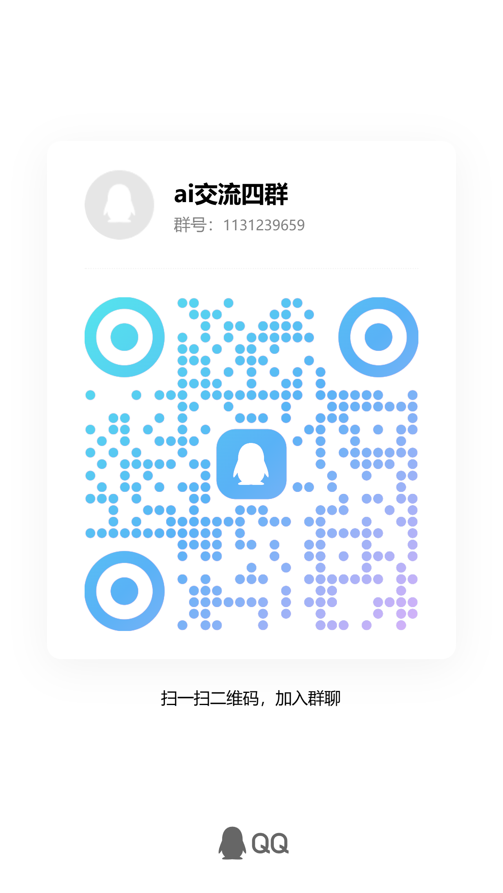 |
1057540028 | 1077074552 | 618179023 | 1131239659 |

Telegram
聊天群和频道。
| 聊天群 | 频道 |
|---|---|
t.me/coolcoffeeai | t.me/chachachalkf |
桌面及原有自有代码许可证 · 安卓客户端 GPL-3.0 · 开源许可与第三方声明
冷咖啡 · 把想法做出来，把作品留下来。